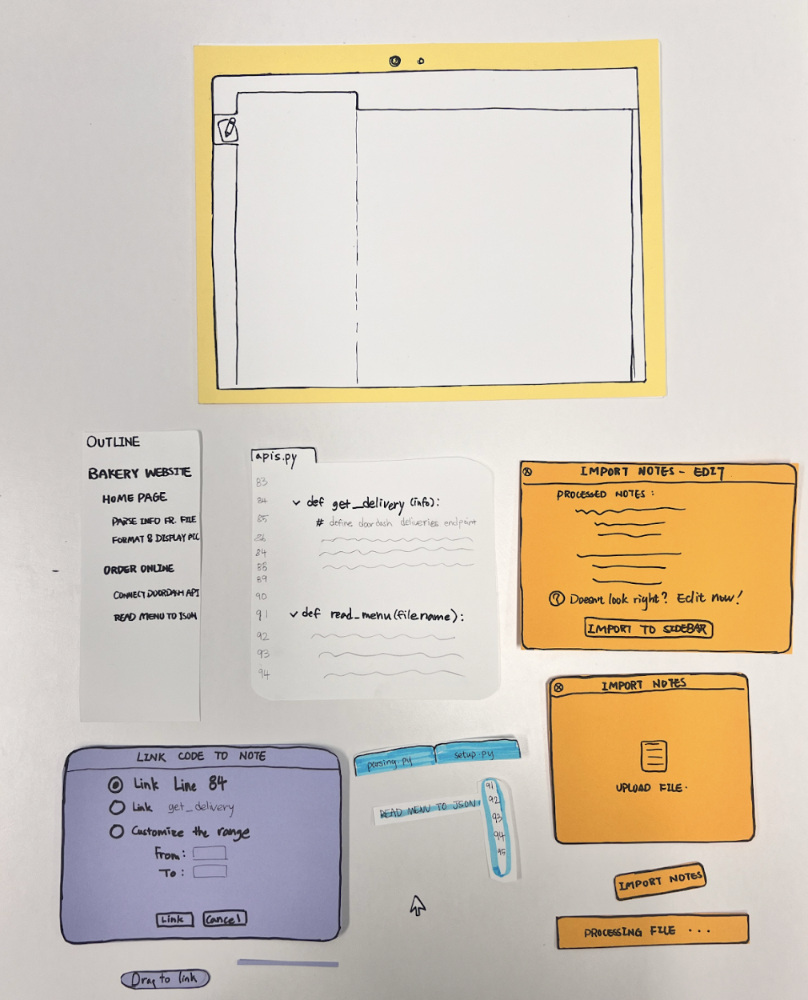
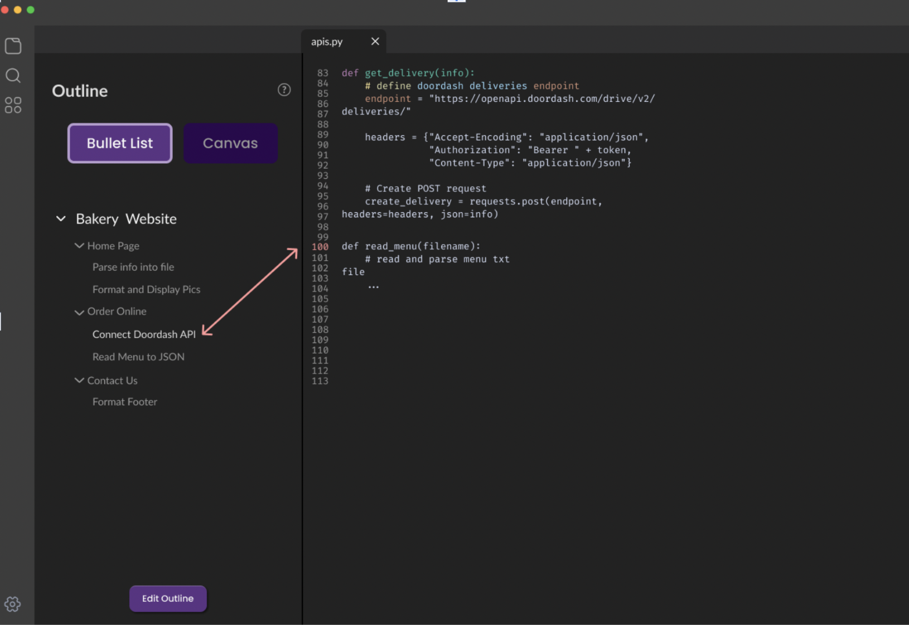

Dev Flow
As we embarked on the journey to create a web application that seamlessly links code snippets to notes, we encountered numerous challenges and garnered invaluable insights. This project was motivated by the prevalent struggles that developers face, particularly in large, full-stack projects where managing a coherent train of thought can become a daunting task due to the dispersion of related code across various files. Resuming projects after a break posed another significant challenge, often leaving developers puzzled about their previous coding decisions. This reflection aims to provide a detailed account of our design learnings, elucidating the iterative design process and the strategies we implemented to enhance user experience and interface effectiveness.
Our first step was to design a straightforward, low-fidelity paper prototype that featured two key functionalities: a drag-and-click mechanism for linking code snippets to corresponding note items and a one-click feature to reveal all code snippets related to a selected note item. The feedback on this prototype was enlightening. Users were excited about the concept, recognizing its potential to significantly improve their coding efficiency. However, they also voiced concerns about potential usability issues. Some found it unclear how to initiate and manage these links, indicating a disconnect between our design intentions and user expectations.
"I love the idea of linking notes to code, but I'm not quite sure how to get started. Maybe you could guide us through the first few steps?"
"It's a little confusing. I think I get what you're trying to do, but it's hard to see the connections right away."
This stage was crucial as it highlighted the need for clearer instructions and demonstrations of the application's core features. The feedback received led us to understand that while the conceptual foundation of our application was strong, its execution needed refinement to ensure intuitive usability. Discussions and interactions with users during this phase revealed that the intuitiveness of the user interface was as critical as the functionality itself. This feedback loop was vital in shaping the direction for our subsequent prototypes. During this phase, we engaged in multiple brainstorming sessions to explore how we could improve user understanding and ease of use. We considered various design changes, including more intuitive icons and interactive tutorials that could guide new users through their first linking process. The richness of direct user feedback provided during live testing sessions helped us to understand the user's perspective more clearly and adjust our design strategy accordingly.
To address these concerns, we developed a high-fidelity prototype using Figma. This phase included a detailed heuristic evaluation which brought to light several critical usability issues. The evaluation revealed that although the application was visually appealing, it lacked intuitive user guidance and control. This was a pivotal moment in our project, as it underscored the importance of an effective onboarding process that could guide users through the application's functionalities effortlessly. Many users expressed confusion over the operational aspects of the linking mechanism. One poignant piece of feedback we received was, "I found myself lost a couple of times; maybe some tooltips or a quick tutorial would help clear things up." This sentiment was a common thread among the evaluators and became a focal point for our subsequent redesign efforts. The evaluators provided concrete suggestions for improvement, such as clearer visual cues for interactive elements and a more structured layout that could guide users through the application's workflow more naturally. We took these insights very seriously and began to redesign the interface with a stronger focus on navigational cues and user flow. We added detailed walkthroughs for first-time users and improved the visibility of interactive elements through better contrast and more distinctive icons. Additionally, we implemented a feedback mechanism where users could easily report issues or suggest improvements directly within the app, fostering a continuous dialogue between the developers and the users.

"I completely didn't realize the code was highlighted because the color was the same as everything else."
"Maybe you should highlight the note item as well? I lost track of which item I was looking at because nothing was highlighted."
The feedback from our user studies provided further direction for refining the application. A significant issue highlighted was the inadequate visibility of the code highlighting, which made it difficult for users to discern the links between their notes and code snippets. In response, we introduced bolder highlighting for both the code and the corresponding notes, which greatly improved navigation and usability. Additionally, the initial drag-and-click functionality received criticism for its lack of fluidity, which was frustrating for users trying to link their code snippets efficiently. To remedy this, we dedicated substantial effort to enhance this feature, ensuring that it was both smooth and responsive, thereby aligning more closely with user expectations and needs. We conducted multiple iterations, each informed by user feedback, focusing on enhancing the tactile feedback and visual responsiveness of the drag-and-click interactions. Further, based on user feedback highlighting difficulties in managing large numbers of linked items, we developed an enhanced organizational structure within the app. This included the ability to create groups of linked code snippets and notes, as well as the introduction of tags and filters to help users quickly find links relevant to their current task.
The final version of our prototype included an innovative feature: AI-generated notes. This function allows users to automatically generate preliminary notes when embarking on new projects, reducing the initial setup time and allowing them to concentrate on coding tasks. The positive reception to this feature has encouraged us to explore further AI integrations, such as automatically linking code snippets to notes based on their content, leveraging the capabilities of advanced language models. Looking ahead, we plan to implement features that will allow users to save and share their links. This functionality will not only enhance individual productivity but also foster a collaborative environment where developers can share and build on each other’s work. We are exploring the possibility of integrating version control systems directly within the application, allowing users to track changes and collaborate in real-time more effectively.
Throughout this project, we learned the paramount importance of aligning our design with user needs and expectations. Each iteration of our design brought new insights and moved us closer to creating a tool that not only fulfills a fundamental need among developers but also enhances their workflow and productivity. Our commitment to iterative improvement, grounded in user feedback, has been and will continue to be central to our development philosophy. This journey has not only improved our product but also deepened our understanding of effective interface design and the critical role of user feedback in creating intuitive and useful applications. We are excited to continue refining our application, always with the goal of enabling developers to work more efficiently and enjoyably.